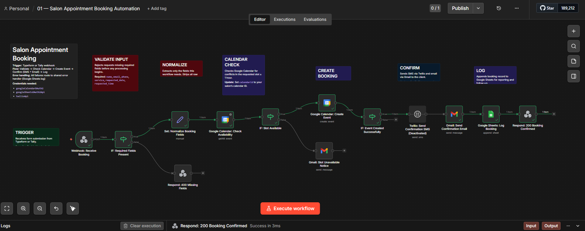

01
Beauty & Wellness
Salon Appointment Booking Automation
Clients submit a booking request online via Typeform or Tally, instantly triggering a workflow that checks Google Calendar for slot availability. If the slot is free, an event is created and confirmations go out via both SMS and email — all within seconds of submission. Every booking is automatically logged to Google Sheets, giving the salon a clean record without a single manual entry.
Typeform / Tally
Google Calendar
Twilio SMS
Gmail
Google Sheets
n8n
Learn More →